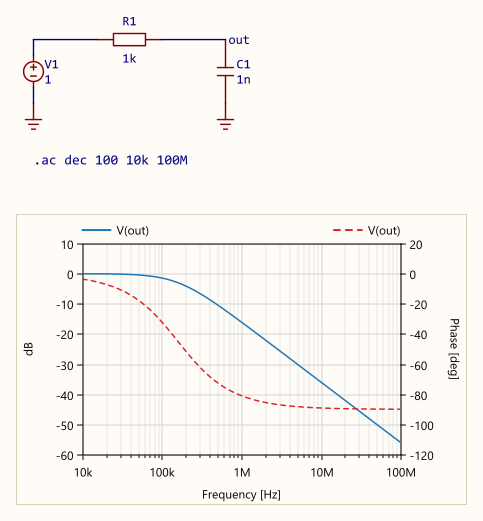
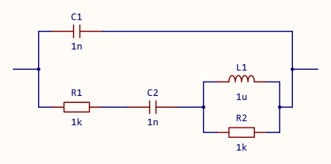

FreqSim ヘルプ
R・C・L などを組み合わせた線形回路の周波数特性を計算する、AC 解析専用の回路シミュレータです。 ブラウザの検索（Ctrl+F）で、このページ全体を探せます。 最新版は配布ページで入手できます。
操作の流れ
まずサンプルを動かす
「ファイル」→「サンプルを開く ...」で 01_RCローパス を選んで開いたら、F5 を押してください。 回路上のグラフに、周波数特性が描かれます。 サンプルは易しいものから順に並んでいて、それぞれに見どころと「やってみよう」が書いてあります。
新しく回路を描く
- 左のパレットで部品を選び、回路図をクリックして置きます（Ctrl+R で回転、Ctrl+E で左右反転）。
- W でワイヤに切り替え、端子から端子へクリックでつなぎます（右クリックで引きかけを取り消し）。
- G で GND を置きます。
- 見たいノードに N でネットラベルを付けます。クリックすると名前のウィンドウが開きます（例:
out。日本語の名前も使えます）。ワイヤをダブルクリックしても付けられます。 - A で解析設定のウィンドウを開き、OK を押してから回路図をクリックして置きます。既定は
.ac dec 100 10k 100Mで、そのまま OK で配置すれば解析できる設定値です。 - F5 で実行します。グラフが1枚も無ければ、回路の下（縦長の回路なら右）に、最初に置いたネットラベルのノードの電圧のボード線図が自動で置かれます。
- 値を変えるには、部品をダブルクリックします（または選んで Enter / F2）。

V(out) のボード線図が置かれます（左の軸が dB、右の軸が位相で破線）。- 解析は F5 を押したときだけ行います。実行後に回路を編集すると、ステータスバーに「結果が古い」と出ます。
- エラーと警告は画面下の診断に出ます。行をダブルクリックすると、該当する部品へ移動します。
画面とマウス操作
画面の構成
| 場所 | 内容 |
|---|---|
| メニューとツールバー | ファイル・編集・解析・設定・ヘルプ。ツールバーの各ボタンは、マウスを載せるとの説明が表示されます。 |
| 部品パレット | 置く部品を選びます。右端の英字はショートカットキーです。伝送線路と図形は、押してから種類を選びます。 |
| 文書タブ | 開いている回路図。未保存なら名前の先頭に * が付きます。ドラッグで並べ替えられます。 |
| 表示対象の解析データ | .acか.spによる解析の結果が2つ以上あるときだけ出ます。グラフ・書き出し・可視化に使う結果を選びます。 |
| 回路図 | 部品とグラフを置く部分です。 |
| スクロールバー | 回路図の右と下にあります。つまみの位置と大きさで、回路図全体のどこをどれだけ見ているかが分かります。つまみをドラッグするか、矢印や溝をクリックすると、表示範囲が動きます。回路図の端から画面の半分まで、外側へも送れます。バーの上でホイールを回すと、そのバーの向きに動きます。何も置いていない回路図では動きません。 |
| 検索バー | Ctrl+F で回路図の隅（最初は右上）に重ねて出ます（回路図の検索）。 |
| 可視化バー | 回路の可視化をしている間だけ出ます（回路の可視化）。 |
| 端子ペイン | サブサーキット回路図のときだけ出ます。端子の順序と辺、パラメータ、使う側の箱の見た目（シンボルの図形・端子名）を決めます（サブサーキット）。 |
| 診断 | エラーと警告があるときだけ出ます。行をダブルクリックすると、該当する部品へ移動します（診断）。 |
| ステータスバー | 今のツール、メッセージ、「結果が古い（再実行してください）」、マウスの下にある要素、グリッド座標、表示の倍率。 |
マウス操作
| 操作 | 働き |
|---|---|
| クリック | 要素を選びます。何も無い所をクリックすると、選択を解除します。 |
| Ctrl+クリック、Shift+クリック | 選択に足す・選択から外す。 |
| ドラッグ（要素の上から） | 選んでいるものをまとめて動かします。グリッドに吸着します。動かしている間は、Esc（取り消し）とカーソルキー（表示の移動）のほかのキーは効きません。 |
| Ctrl を押したままドラッグ | 選んでいるものを複製して、離した所に置きます。元はそのまま残り、置いた複製が選ばれます。離したときに Ctrl を押していれば複製、離していれば移動です（途中で切り替えられます）。元の位置に戻して離すと何も置きません。複製はワイヤを追従させません。ID は貼り付けと同じく、重なれば振り直します（部品の ID）。ネットラベルの名前の扱いも貼り付けと同じです（設定の「貼り付け・複製したネットラベルの名前が重なったら変える」）。 |
| ドラッグ（何も無い所から） | 範囲選択。枠内か、枠に少しでも触れたものを選びます（設定で「完全に囲んだものだけ」にできます）。Ctrl か Shift を押しながらだと、今の選択に足します。 |
| Alt を押したままドラッグ | 動かす間だけ、ワイヤの追従を切ります（「ワイヤを追従させる」が ON のとき）。「ワイヤを追従させる」が OFF のときは変化しません（追従なし）。 |
| Shift を押したままドラッグ | 水平か垂直の一方だけに動かします。向きは大きく動かしたほうで、ドラッグの途中で押しても効きます。Ctrl と一緒に押すと、複製を水平か垂直に置きます。 |
| ダブルクリック | 部品はプロパティ、ワイヤはそのノードのネットラベル（ワイヤからノードに名前を付ける）、解析設定と変数定義は設定のウィンドウ、グラフは「グラフ設定」を開きます。 |
| 右クリック | メニュー。部品などを置いている途中なら、それを取り消します（下を参照）。 |
| 右ドラッグ、中ボタンのドラッグ | 表示範囲を移動します。 |
| ホイール | マウスの下を中心に拡大縮小（12.5%〜800%）。グラフの上でも回路図全体が拡大縮小します。スクロールバーの上では、そのバーの向きに表示を動かします。 |
| 横ホイール | 表示を左右に動かします（チルトホイール・親指ホイール）。 |
| 図形などのつまみのドラッグ | グラフや図形の大きさを変えます。 |
| ドラッグ中に回路図の端へ | 移動・複製・範囲選択・つまみのドラッグで、マウスを回路図の端まで持っていくと、表示範囲がその向きへ動き続けます。端から外へ離すほど速くなり、内側へ戻すと止まります。 |
| カーソルのドラッグ | 選んでいるグラフのカーソルを動かします（カーソル）。 |
置くときと線を引くとき
- 部品は続けて何個でも置けます。Esc か右クリックで選択に戻ります。
- 解析設定・変数定義・磁気結合・コメント・グラフは、1つ置くと選択に戻ります。
- 解析設定・変数定義・磁気結合・コメントは、パレットのボタンかキーを押すと先に設定のウィンドウが開きます。 OK を押すと、書いた中身がマウスに付いてくるので、回路図をクリックして置きます。 ウィンドウでキャンセルすると、何も置かずに選択に戻ります。
- 置く前に中身を直したいときは、同じボタンかキーをもう一度押します。書いた中身の入ったウィンドウが開きます。 置く前に Esc か右クリックで取りやめると、書いた中身は消えます。
- ネットラベルは、回路図をクリックすると名前のウィンドウが開き、OK で置かれます。 キャンセルすると何も置かれません。ウィンドウを閉じた後も続けて置けます。
- ワイヤは、クリックするたびに L 字（横 → 縦）でつなぎます。部品の端子に着くと終わります。 右クリックで引きかけを捨て、もう一度右クリックすると選択に戻ります。
- 図形は2点をクリックして引きます。円弧の角度は 15° 刻みです。
- 置いた直後に、マウスを動かさずにダブルクリックすると、置いた部品のプロパティが開きます。
右クリックのメニュー
| 場所 | 主な項目 |
|---|---|
| 部品などの上 | プロパティ（1つだけ選んでいるとき）、CSVファイルの内容を表示 ...（値が FILE= の部品の上）、Touchstoneファイルの内容を表示 ...（Sパラブロックの上）、チューニング ...（.tune の上）、サブサーキット回路図を開く、端子の変更を取り込む、切り取り・コピー・貼り付け、回転・左右反転、無効化（短絡・開放）、チューニング対象にする・外す（素子をチューニング対象にする）、選択範囲を画像に、削除 |
| グラフの上 | グラフ設定、ここにカーソルを追加、カーソルの削除、データを CSV に保存、画像として保存・コピー |
| 何も無い所 | 貼り付け、直並列の式から配置 ...、回路図全体を画像として保存・コピー、解析結果の生データを CSV に保存、Touchstone に保存 |
| 診断の行 | コピー（重大度・コード・場所・本文） |
ファイルのドロップ
.fsim（回路図ファイル）は開きます。複数のファイルをまとめてドロップすると、まとめて開きます。-
.fsub（サブサーキット回路図のファイル） を回路図の上にドロップすると、開くか部品として置くかを尋ねます。 Ctrl を押しながらドロップすると、尋ねずに置きます。回路図の外にドロップすると開きます。 - Touchstone（
.s2pなど）は、Sパラブロックとして置きます。 - 置くときは、落とした後のクリックで場所を決めます。
- 電圧源などのプロパティウィンドウの値の欄に CSV をドロップすると、
FILE=として入ります。
回路図の検索
部品の ID や値、ネットラベル、コメントなど、回路図に描かれている文字を探して、見つけた要素を選びます。
- Ctrl+F（編集メニューの「検索」、ツールバーの虫眼鏡）で検索バーが出ます。 打つたびに最初に一致したものを選択し、画面の外にあれば中央に表示します。一致が無ければ選択状態は変更しません。
- Enter / Shift+Enter か F3 / Shift+F3 で、次・前の一致へ移ります。 回路図の上部から、同じ高さなら左から順に巡り、端まで行くと反対の端へ戻ります（戻ったという表示がステータスバーに出ます）。 検索バーを閉じていても、F3 / Shift+F3 は前回の入力値で探します。
- 件数は、選択中のものが検索結果の何番目かと総数です（例えば
3 / 12）。検索結果ではないものを選択していれば、総数だけ表示します（12 件）。 - 検索対象になるのは回路図に描かれている文字です。部品の ID と値（サブサーキットのパラメータの行を含む）、ポートの番号、ネットラベルの名前、磁気結合の本文、解析設定・変数定義・コメントの本文、グラフのトレース式。
- 部分一致です。また、大文字と小文字は区別しません。数として同じでも、書き方が違えばヒットしません（
10kは10000でヒットしません）。 - 「単語」をONにすると、英数字が続いている部分を単語として扱い、単語と完全に一致する場合のみヒットします。
R1はR10にヒットせず、例えばコメントの「R1に入力」にはヒットします。 - 「すべての欄」をONにすると、描かれていない欄も検索対象にします。ファイルの絶対パス（CSV・サブサーキット・Touchstone）、値の欄の形式の指定、表示していないサブサーキットのパラメータです。
- 検索対象は、開いているタブの中だけです。
- バーの地か件数の文字を掴んでドラッグすると、四隅へ移せます。ドラッグを離すと一番近い隅に配置されます。
- バーの欄で Esc を押すか、× で閉じます。
- 配置や貼り付けの途中で検索すると、それをやめて選択に戻ります。可視化中に検索を始めようとすると可視化を終わり、逆に検索中に可視化に入ると検索バーは閉じます。
部品
パレットの部品
パレットの上から順に並べます。キーは、回路図にいるときに押すと、その部品に切り替わります。
| キー | 部品 | 説明 |
|---|---|---|
| Esc | 選択 | 選択やドラッグ操作などの普段の状態に戻る |
| W | ワイヤ | 端子同士を電気的に接続する |
| G | GND | 基準電位（0 V）のノード |
| N | ネットラベル | ノードに名前を付ける。同じ名前のラベルは、離れていても同じノードになる（電気的に接続される） |
| T | 端子 | サブサーキット回路図の外とつなぐ点（サブサーキット回路図でのみ使用可能） |
| R | 抵抗 | |
| C | キャパシタ | コンデンサとも呼ぶ |
| L | インダクタ | コイルとも呼ぶ |
| Z | インピーダンス | 式または CSV ファイルで値を与える |
| Q | スイッチ | 状態の値で、共通端子をどの接点につなぐかを選ぶ（スイッチ） |
| － | 伝送線路 | 押してから、伝送線路・開放スタブ・短絡スタブを選ぶ |
| V | 電圧源 | |
| I | 電流源 | |
| P | ポート | Sパラメータ解析での入出力ポート。AC 解析では Z0 の抵抗として働く（サブサーキット回路図には配置不可） |
| A | 解析設定 | .ac / .sp（サブサーキット回路図には配置不可） |
| D | 変数定義 | .param / .tune |
| K | 磁気結合 | インダクタどうしを結合係数 k で結合する |
| X | サブサーキット | サブサーキット回路図（.fsub）を部品として置く。押すとファイルを尋ねる |
| S | Sパラブロック | Touchstone ファイルを部品として置く。押すとファイルを尋ねる |
| M | コメント | 解析に影響しない文章 |
| － | 図形 | 押してから、直線・四角・楕円・円弧を選ぶ。解析に影響しない |
| － | 直交グラフ・スミスチャート・極座標グラフ | 解析の結果を描く（サブサーキット回路図には配置不可。グラフ） |
回路図とサブサーキット回路図では、使用可能な部品が一部異なるので注意してください。
部品の設定
部品をダブルクリックするか、選んで Enter / F2 を押すと、設定のウィンドウが開きます。 値や式に誤りがあっても、ウィンドウは OK で閉じられます。誤りは診断に出ます。
| 部品 | 設定する項目 | 置いたときの値 |
|---|---|---|
| 抵抗・キャパシタ・インダクタ | 値 [ohm] / [F] / [H] | 1k / 1n / 1u |
| インピーダンス | Z [ohm]（式か CSV ファイル） | {j*2*pi*f*1u}（1 µH のインダクタと同じ） |
| 電圧源・電流源 | 振幅と位相、または式か CSV ファイル（電源の値） | 1 |
| ポート | 番号（1 からの連番）と Z₀（正の実数。式は不可） | 空いている最小の番号、50 |
| 磁気結合 | 結合するインダクタ（2つ以上）と k | 先頭のインダクタ2つ、0.9 |
| 伝送線路・スタブ | Z₀ と長さ（電気長 θ と f₀、遅延 td、物理長 l と εeff のどれか） | 50、90° @ 1G |
| スイッチ | 接点数（1〜16）、状態（式も書ける）、OFF 抵抗 [ohm]（空欄なら 1G） | 接点数 2、状態 1 |
| サブサーキット | パラメータの値（空欄なら既定値）と、回路図に値を出すか | |
| Sパラブロック | 参照する Touchstone ファイルと、ピンの配置（Sパラブロック） | |
| ネットラベル | 名前 | net1、net2、… |
| コメント | 本文、フォント、サイズ | |
| 図形 | 線種（実線・破線・点線・一点鎖線） |
- GND には設定がありません。ワイヤでは、そのノードのネットラベルのウィンドウが開きます（ワイヤからノードに名前を付ける）。
- 長い値や式を書くときは、ウィンドウの左右の端をドラッグして幅を広げられます。
- ポートの端子は2つです。片側を GND につなげば普通のポート、両側を回路につなげば差動のポートになります。 ただし、差動の計算をしたいときは、ミックスドモードSパラメータの利用を推奨します（片側を GND につなげた普通のポートを使用）。
- 磁気結合でインダクタを3つ以上選ぶと、すべての組を同じ k で結合します。 そのときの k は実数の定数で、−1/(N−1) 以上 1 以下にします（N はインダクタの数）。2つなら −1 以上 1 以下で、3つなら −0.5 以上 1 以下、4つなら −0.333 以上 1 以下。 式も書けます。
- 伝送線路に損失と分散はありません。値は実数で、Z₀ と f₀ は正、θ・td・l は 0 以上、εeff は 1 以上です。 端子は、伝送線路が4つ（入力側と出力側の信号と帰路）、スタブが2つ（信号と基準）です。
- スイッチはスイッチを見てください。
- ネットラベルの名前を
0（ゼロ） かGNDにすると GND 扱いになりますが、紛らわしいため、基本的には GND を使ってください。 - サブサーキットはサブサーキット、SパラブロックはSパラメータを見てください。
ワイヤからノードに名前を付ける
ワイヤをダブルクリックするか、選んで Enter / F2 を押すか、右クリックの「プロパティ」を選ぶと、そのワイヤのノードに付けるネットラベルのウィンドウが開きます。
- そのノードのワイヤ上にネットラベルがまだ無ければ、新しいラベルを配置します。OK でワイヤの上に置かれ、キャンセルすると何も置かれません。
- そのワイヤに線でつながったネットラベルがあれば、そのラベルを変更できます（いくつかあれば、押した所にいちばん近いもの）。
- GND につながったワイヤでは開きません。
部品の ID
- ID は種類の接頭文字に番号を付けたものです（
R1、C2、T1）。接頭文字は R・C・L・Z・V・I・P（ポート）・K・X・S・T（伝送線路とスタブ）・Q（スイッチ）です。 - ID はプロパティウィンドウで変えられます。接頭文字で始めて、ほかの ID と重ならないようにします。
- ID を変えると、磁気結合の相手、グラフのトレース式と電源の値の
I(...)も連動します。ネットラベルの名前を変えたときも、V(...)が連動します（同じ名前のラベルが別の所に残っているときのように、元の名前のノードがまだあるときは付け替えません）。 - 貼り付けた部品・複製した部品（Ctrl を押したままドラッグ）の ID が既にある ID とぶつかると、ぶつかったものだけ番号を振り直します。
直並列の式から配置
抵抗・キャパシタ・インダクタの直列と並列を式で書いて、まとめて置きます。 Ctrl+I（「編集」メニューか、何も無い所の右クリックの「直並列の式から配置 ...」）でウィンドウを開き、式を書いて「配置」を押します。 貼り付けと同じく回路がマウスに付いてくるので、クリックで置きます。
| 書き方 | 意味 | 例 |
|---|---|---|
+ | 直列 | R + L + C |
| または / | 並列 | R | L | C、R / C |
( ) | ひとまとまりにする | (R | L) + C |
名前=値 | 部品の名前と値 | R1=50.4376m + C1=1.00124u + L1=795.228p |
- 名前の先頭の文字（R・C・L。小文字でもよい）で部品の種類が決まります。
Rのように番号を省くと、回路図にまだ無い番号を付けます。RsやC_bulkのような名前も書けます（名前の規則）。 - 値を省くと、パレットから置いたときと同じ値（
1k/1n/1u）になります。値は数値と接尾辞か、{}で囲んだ式で書きます。単位（100nFのFなど）は書けません。 - 空白と、いちばん外側の括弧は省けます。括弧の入れ子は 64 段までです。
- 括弧なしで
+と|を混ぜることはできません（R + L | Cは誤り）。R + (L | C)のように括弧でまとめます。 ||や//、全角の記号は使えません。誤りがあると、何文字目に何があるかがウィンドウに出て、配置できません。- 同じ名前を2回は書けません。名前が回路図の部品とぶつかったときは、貼り付けと同じく、ぶつかったものだけ番号を振り直します（部品の ID）。
- 直列は左から右へ並べます。並列は枝を下へ積み、枝の左右に短い線を挟んで縦線で束ねます。回路の両端にも短い線を付けます。並列の枝の束を隣とつなぐ高さは、ウィンドウの「並列のそろえ方」で中央か上を選べます。
- 置く前に Ctrl+R / Ctrl+E で向きを変えられます。Esc か右クリックでやめます。置いた後は Ctrl+Z 1回で戻せます。
- ウィンドウは、前回置いた式とそろえ方を入れた状態で開きます（アプリを閉じるまで覚えます）。

(C | (R + C + (L | R))) を置いたところ（並列のそろえ方は中央）。番号と値は自動で付きます。部品の短絡・開放
部品を選んで、ツールバー・「編集」メニュー・右クリックの「無効化（短絡）」「無効化（開放）」を押すと、 部品を消さずに両端をつなぐ（短絡）または切る（開放）ことができます。無効にした部品には × 印が付きます。
- 対象は、抵抗・キャパシタ・インダクタ・インピーダンス・電圧源・電流源・開放スタブ・短絡スタブです。
- 短絡は 0 Ω、開放は部品を取り外した状態として、理想的に解析します。無効にした部品の値は読まないため、値に誤りがあっても解析エラーになりません。
- 使用例： 重ね合わせの理を確認するために独立電源を 0 にする場合、電圧源は短絡、電流源は開放にします。制御電源は 0 にしません。 制御電源の式に定数と制御が混ざっているときは、1つの電源に書くと短絡・開放で両方が消えるので、式と定数用の電源に分けて置きます。
- 磁気結合の相手のインダクタを短絡・開放すると、そのインダクタとの結合は無いものとして解析します。
- 状態は回路図ファイルに保存されます。
スイッチ
左の共通端子を、右に並んだ接点のどれにつなぐかを、状態の値で選ぶ部品です。
状態には式が書けるので、.tune の変数にすれば接続先を簡単に切り替えられます。
- 状態は、値の実部を四捨五入した番号の接点につなぎます（2.5 は 3）。0 以下ならどこにもつながず、接点数を超えたら最後の接点につなぎます。 値が無限大などになった周波数は、解けなかった点になります。
- つないだ接点は理想的な短絡（0 Ω）です。ほかの接点は、OFF 抵抗（既定 1 GΩ）で共通端子とつながります。 完全に切り離すと、つないでいない接点の先の回路が浮いて解けなくなるためです。
- OFF 抵抗の漏れが問題になるような高インピーダンスの回路では、設定ウィンドウで OFF 抵抗を大きくします。空欄に戻すと既定値です。
- 接点数は 1〜16 です。共通端子と接点1は同じ高さにあり、接点数を変えると下の端の接点が増えたり減ったりします。 接点数を減らしたとき、消えた接点につないでいたワイヤは切れます（ほかの接点に付け替わることはありません）。
- 使わない接点は空けておいてかまいません（未接続の警告は出ません）。共通端子の繋ぎ忘れは警告が出ます。
-
端子の電流は、共通端子が
I(Q1, com)、接点が番号でI(Q1, 2)です。どれも端子からスイッチへ入る向きが正です。 回路の可視化では、共通端子からレバーを通って、つないだ接点へ電流が流れます。 - 右クリック →「チューニング対象にする」で、状態をチューニング対象にできます（素子をチューニング対象にする）。 つまみの範囲は 0〜接点数の線形になり、レバーもチューニングつまみに合わせて動きます。
-
サブサーキットの中のスイッチは、状態をパラメータ（
{sw}など）にすると、インスタンスごとに切り替えられます。 そのサブサーキット回路図の中のレバーは破線になります。（インスタンスごとに値が違う可能性があるため） - 無効化（短絡・開放）はできません。
値の書き方
部品の値・変数・トレース式は、同じ規則で書きます。
数値には SPICE とほぼ同じ接尾辞が使えます。ただし SPICE では M はミリですが、ここではメガです。
計算する値や複素数は、式として扱えるように {} で囲みます。
数値と接尾辞
| 接尾辞 | 倍率 | 例 |
|---|---|---|
T | 1012 | 1T |
G | 109 | 2.4G |
M | 106 | 10M（Meg も使えます） |
k | 103 | 4.7k |
m | 10−3 | 1m |
u | 10−6 | 10u（µ と μ も使えます） |
n | 10−9 | 4.7n |
p | 10−12 | 100p |
M はメガ、m はミリです。この2つだけは大文字と小文字で意味が変わります（1M は 1000000、1m は 0.001）。
Mとmのほかは、大文字・小文字を区別しません（4.7Kは4.7kと同じ）。- 単位は書きません。
100nFではなく100n、50ohmではなく50と書きます。 - フェムト（f）はありません。
fは周波数を表す名前です。1pより小さい値は0.05pや5e-14と書きます。 - 指数表記（
1e-9、2.5E3）も使えます。
式
部品の値と .param の値では、式にしたいときは {} で囲みます。
トレース式（グラフに描く式）は囲まずに式を書きます。値はすべて複素数として計算します。
| 例 | 意味 |
|---|---|
{2*Rbase} | 変数 Rbase の 2 倍 |
{50+j*10} | 複素数 50 + j10 |
{1/(s*1u)} | 1 µF のキャパシタのインピーダンス 1/(jωC) |
{1/(2*pi*sqrt(Lp*Cp))} | 変数 Lp と Cp の共振周波数 |
- 使用できる演算子は
+-*/^（べき乗）と括弧です。 - 掛け算の記号は省略できません。
2piは誤りで、2*piと書きます。 ^は符号より先に計算します（-2^2は −4）。- 式の中の数値にも接尾辞が使えます（
{1/(2*pi*1k*10n)}）。
式で使える名前
| 名前 | 意味 |
|---|---|
f | 周波数 [Hz] |
w | 角周波数 ω = 2πf [rad/s] |
s | jω（伝達関数の s に jω を入れたもの） |
pi | 円周率 π |
e | 自然対数の底（2.718…） |
j | 虚数単位（j*j は −1） |
このほか、.param と .tune で定義した変数が使えます（解析設定と変数）。
上の6つと同じ名前の変数は、式からは参照できません（上の意味で読まれ、警告が出ます）。
関数
部品の値・変数・トレース式で関数が使えます。引数は複素数でも構いません。 関数の名前も大文字・小文字を区別しません。
| 書き方 | 意味 |
|---|---|
| 大きさと偏角 | |
db(z) | デシベル 20·log10|z|。大きさが 0 なら −∞ |
mag(z) abs(z) | 大きさ |z|（2つは同じ） |
deg(z) | 偏角 [度]。−180 より大きく 180 以下 |
rad(z) | 偏角 [ラジアン]。−π より大きく π 以下 |
| 実部と虚部 | |
re(z) im(z) | 実部、虚部 |
conj(z) | 複素共役 |
| べき・指数・対数 | |
sqrt(z) | 平方根。負の数の平方根は虚数になる（sqrt(-1) は j） |
pow(a, b) | a の b 乗。a^b と同じ |
exp(z) | e の z 乗 |
ln(z) | 自然対数 |
log10(z) | 常用対数 |
| 三角関数と双曲線関数 | |
sin(z) cos(z) tan(z) | 三角関数。引数はラジアン |
asin(z) acos(z) atan(z) | 逆三角関数。値はラジアン |
sinh(z) cosh(z) tanh(z) | 双曲線関数 |
| 比較 | |
min(a, b) max(a, b) | 実部を比べて、小さいほう（大きいほう）をそのまま返す |
| 丸め（複素数は実部と虚部をそれぞれ丸める） | |
round(z) | 最も近い整数。ちょうど .5 なら 0 から遠い側（round(2.5) は 3、round(-2.5) は −3）。使用例： 10p 刻みに揃えるなら round(x/10p)*10p |
floor(z) ceil(z) | それ以下の最大の整数、それ以上の最小の整数 |
| 回路の計算 | |
par(a, b) | 並列合成 a·b/(a+b)。par(1k, 1/(s*10n)) は 1kΩ と 10nF の並列。3つ以上は par(a, par(b, c)) と入れ子にする |
vswr(Γ) | 反射係数 Γ から定在波比 (1+|Γ|)/(1−|Γ|)。|Γ| が 1 以上なら +∞（vswr(S(1,1))） |
deg と rad は複素数の偏角を求めます。角度を換算する関数ではありません。
45° をラジアンにするなら 45*pi/180 と書きます。
実数と分かっている値（rad(45) など）に使うとエラーになります。
電源の値
電圧源・電流源の値は「振幅 位相」です。位相の単位は度で、省略すると 0° です。
| 例 | 意味 |
|---|---|
1 | 振幅 1、位相 0° |
1 45 | 振幅 1、位相 45° |
{1+j} | 複素数で直接書く（振幅 √2、位相 45°の例） |
- 振幅と位相を分けて書く形では、式は使えません。式で書くときは、複素数の振幅を1つの
{}にします。 - 値は実効値ではなく振幅（ピーク値）です。電力を求めるときは 2 で割ります。
- SPICE のように先頭に
ACと書いても構いません（読み飛ばします）。
制御電源
電源の値の式に回路の電圧・電流を書くと、制御電源（従属電源）になります。記号が菱形に変わります。 専用の部品はありません。
| 例 | 意味 |
|---|---|
{10*V(in)} | ノード in の電圧の 10 倍（電圧制御電圧源・電圧制御電流源） |
{2*V(a, b)} | ノード a と b の差の電圧の 2 倍 |
{100*I(R1)} | R1 を流れる電流の 100 倍（電流制御電圧源・電流制御電流源） |
{1 + gm*V(in)} | 定数と組み合わせてもよい（定数の部分は独立電源として働く） |
- ノードはネットラベルの名前で書きます（自動で付く
N001のような名前は書けません）。 -
I(...)で参照できるのは2端子の部品です。電流の向きは、正極から部品の中を通って負極へ。 Sパラブロック・伝送線路・サブサーキットの電流は、0 V の電圧源を直列に入れてI(その電圧源)で参照します。 - 係数には
f・s・変数を使えます。{A0/(1+s/(2*pi*fp))*V(in)}のように、周波数で変わる利得も書けます。 V(a)*V(b)のような掛け算、V(...)で割る、関数に入れる（abs(V(a))など）は書けません。回路が線形でなくなるためです。- 参照できるのは、同じ回路図の中の名前だけです（サブサーキットの中から親のノードは指せません）。
- 名前を変えると、電源の値の中の参照も追随します。
- Sパラメータ解析では、定数の部分は消え、電圧・電流に比例する部分は回路の一部として残ります。
- 使い方は examples の 11〜13 を見てください。
CSV ファイルの値
インピーダンスと電源は、CSV ファイルの値も使えます。
| 書き方 | ファイルの中身 |
|---|---|
FILE=data.csv FMT=RI | 1列目が周波数 [Hz]、続けて実部・虚部 |
FILE=data.csv FMT=MA | 1列目が周波数 [Hz]、続けて振幅・位相 [度] |
FMT=は省略できません。- 数値で始まらない行（見出しやコメント）は読み飛ばします。
- 区切りはカンマ・タブ・セミコロン・空白です。
- データが2列（周波数, 数値）なら、値は実数として読みます。3列以上のときは2列目と3列目を使います。
- データの間は線形補間します。データの範囲外の周波数はエラーになります（外挿はしません）。
- ファイルの場所は回路図からの相対パスで保存されます（ファイルと書き出し）。
- プロパティウィンドウの「形式」の右にある目のボタンで、ファイルの中身を見られます。回路図の部品の右クリック →「CSVファイルの内容を表示 ...」でも開けます。
名前の規則
- ノード名（ネットラベル）・部品の ID・変数名は、大文字・小文字を区別しません。
- 使える文字は、文字（かな・漢字・英字）・数字・
_です。先頭は文字か_にします。 - ノード名だけは数字で始めてもよく、2文字目から
+と-も使えます（例：in+、out-）。 - 空白は使えません。
_に置き換えます。 - 全角の英数字（
Ｖｉｎ）は、半角（Vin）と別の名前として扱われます。見分けにくいので警告が出ます。
解析設定と変数
解析設定（A）と変数定義（D）は、回路図に置くディレクティブです。 パレットのボタンかキーで設定ウィンドウが開き、OK の後にクリックした所へ置かれます（置くときと線を引くとき）。 置いた後もダブルクリックすると設定ウィンドウが開きます。
| ディレクティブ | 例 | 意味 |
|---|---|---|
.ac | .ac dec 100 10k 100M | AC 解析（周波数特性） |
.sp | .sp dec 100 1M 1G | Sパラメータ解析。書き方は .ac と同じ。回路図にポートが1つ以上要る。後ろに bal(1,2) などでポートの割り当てを書ける（ミックスドモードSパラメータ） |
.param | .param Lp=1u Cp={1/((2*pi*10.7M)^2*Lp)} | 変数。式も書ける |
.tune | .tune Rload=50 | チューニングで動かす変数（チューニング） |
周波数の指定
| 例 | 意味 |
|---|---|
.ac dec 100 10k 100M | 10 kHz〜100 MHz を、10 倍ごとに 100 点 |
.ac oct 20 1k 1M | 1 kHz〜1 MHz を、2 倍ごとに 20 点 |
.ac lin 401 9.2M 12.2M | 9.2 MHz〜12.2 MHz を、全体で 401 点（線形間隔） |
.ac list 1k 10k 100k | 並べた周波数だけ（小さい順に並べ替える） |
- 解析設定の初期値は
.ac dec 100 10k 100Mです。 - 点数と周波数は数値で書きます。式や変数は使えません。
- 周波数は正の値です。終了が開始より小さいとエラーになります。
- 設定ウィンドウでは、読み取った周波数（「= 10 kHz」など）が欄の右に出ます。
1m（1 mHz）の書き間違いに気づけます。
変数
.param 名前=値 名前=値 …のように、1つに何個でも並べられます。=の前後に空白を入れません。.paramの値は数値か{式}です。複素数や、fなどを使った式（周波数に依存する値）も書けます。- 変数は、置いた順に関係なく参照できます。循環する参照はエラーです。
- 同じ名前を2回宣言するとエラーです（
.paramと.tuneの間でも）。 -
.tuneの値は実数の定数です。複素数をチューニング対象にしたいときは、実部と虚部や、絶対値と位相を別々に定義して、.paramで組み合わせます（.tune XRe=10 XIm=5と.param X={XRe+j*XIm}）。 - サブサーキット回路図には
.paramだけが書けます（.ac・.sp・.tuneは書けません）。
ディレクティブの設定ウィンドウ
- タブは「解析設定」と「変数定義」があります。
- 「有効」を OFF にすると、その解析設定・変数定義は解析に使われません。ディレクティブ本文の先頭に
*を付けるのと同じです。 ;から行末まではコメントとして扱いますが、フォームを触って本文が組み直されると、そのコメントは消えます。-
「解析設定」で
.spを選ぶと、「ミックスドモードSパラメータを計算する」が出ます。これをONにして「ポートの割り当てを設定 ...」を押すと、別のウィンドウの Logical port の表でポートの割り当てを決められます。 行の順が Logical port の番号で、上下のボタンで入れ替えます。書かなかったポートは、表の末尾に灰色の「自動」の行として出ます。 表の誤りは、診断ペインと同じ文言で、表の下とチェックの下に出ます。 - チェックを付けたまま表の行を全部消すと、ミックスドモードSパラメータは計算しません（注意が出ます）。本文にポートの割り当てが残らないので、開き直すとチェックは外れています。
解析の実行
- F5、ツールバーの「実行」、「解析」→「実行」で解析します。実行中にもう一度 F5 を押すと中止します。
- 有効な解析設定をすべて実行します。結果が2つ以上あるときは、画面上部の「表示対象の解析データ」で切り替えできます（解析設定のディレクティブが表示されます）。
- 実行した後に、部品・ワイヤ・ディレクティブを変えると（接続を変えずに位置を動かしただけでも）、ステータスバーに「結果が古い（再実行してください）」と出ます。 参照しているファイルが書き換わったときも出ます。グラフ・コメント・図形を変えても出ません。
- サブサーキット回路図は、それだけでは解析できません（動作テスト用の回路をテストベンチで作れます）。
- 解析結果のデータ量が大きくなりそうなとき（目安 256 MiB）は、実行する前に確認します。1 GiB を超える可能性のある解析は実行しません。
外部データの周波数範囲
「解析」→「外部データの周波数範囲 ...」で、参照している外部データ（CSV や Touchstone）の周波数範囲と、解析設定（.ac・.sp）の周波数を並べて見られます。
データの範囲外の周波数は解けない（エラーFS0705が発生）ため、複数のデータを使うときの周波数範囲の確認に便利です。
- このウィンドウは開いたまま回路図を直せます。実行しなくても、編集するたびに中身が連動します。
- 帯の色は、灰が解析の範囲、青がデータの範囲、橙がデータが無くて解けない区間、薄い緑が全データの揃う範囲です。 縦の濃い線は、選んだ解析の両端です。ウィンドウの下にも凡例があります。
- 上の段は解析設定ごとの行で、右に範囲と点数が出ます。行をクリックするか ↑ ↓ で1行を選ぶと、縦線・判定・データの行の不足内容がその解析に合わせて変わり、回路図でその解析設定が選ばれます。 行をダブルクリックすると、その解析設定のディレクティブの設定ウィンドウが開きます。 解析設定が多いときは、この段の中でスクロールします。
-
データからはみ出している解析設定の行には、右端にボタンが出ます（図の「縮小のボタン」）。
これを押すか、行を右クリック →「全データが揃う範囲に縮小 ...」で、確認の後に解析設定の周波数範囲を全データが揃う範囲まで縮めます。
- 削るのは、はみ出した側の端だけです。範囲を広げることはしません。点列（
.ac list ...）は、範囲外の点を消します。 - 現在の周波数範囲がデータの範囲と重ならないときは「全データが揃う範囲に置き換え ...」になり、全データが揃う範囲そのものに置き換えます。
-
新しい端は有効6桁で、範囲の内側に入る向きに丸めます（1.0012345 MHz から始まるデータなら
1.00124M）。 書き換えるのは開始と終了の周波数だけで、点数・行末のコメント・ポートの割り当ては書いたまま残ります。 - ここでの変更は、回路図上での Ctrl+Z で戻せます。
- はみ出していない行、全データが揃う範囲が無い行、範囲が狭すぎて丸めると開始と終了が逆になる行では、右クリックの項目を選べません。
- 削るのは、はみ出した側の端だけです。範囲を広げることはしません。点列（
- 上の段の下の1行が、選んだ解析の判定です（「全点がデータ範囲内」、「下側が範囲外」など。範囲外ならデータの揃う範囲と、足りないファイルの数）。 ほかの解析の判定は、行にマウスを乗せると出ます。データが足りない解析の行には警告のアイコンが付きます。
- 下の段はデータの行です。「行の単位」で、ファイルごと（同じファイルを読む素子を1行にまとめる）と素子ごと（CSV の読み方 RI・MA も出る）を切り替えます。 行をクリックすると、そのデータを参照している素子を回路図で選びます。 行をダブルクリックするか、CSV の行は右クリック →「CSVファイルの内容を表示 ...」、Touchstone の行は右クリック →「Touchstoneファイルの内容を表示 ...」で、ファイルの中身を見られます。 行は名前の順に並んでいます。
- 選んだ解析に対してデータが足りない行には、警告のアイコンと、足りない側（下が不足・上が不足・両側が不足）が表示されます。
- Sパラメータ解析を選ぶと、電源だけが読むデータの行は薄くなり、「Sパラ解析では使わない」と出ます。Sパラメータ解析は独立電源を外して解くので、そのデータは解析範囲に影響しません。
- 読めないファイルも表示して、理由を表示します。
- 長いファイル名は中ほどを「…」で省略します。マウスを乗せると全部出ます。
グラフ
グラフの種類と置き方
- パレットの「直交グラフ」「スミスチャート」「極座標グラフ」を押し、回路図をクリックして置きます。種類は後から変えられません。
- グラフを1つだけ選択すると四隅につまみが出て、ドラッグで大きさを変えられます。
- 直交グラフの既定値は、左の Y 軸が dB、右の Y 軸が位相です。同じ式のトレースを左と右の軸で表示すれば、ボード線図になります。
-
グラフが1枚も無いまま解析すると、回路の下（縦長の回路なら右）にグラフが自動で置かれます。AC 解析なら最初に置いたネットラベルのノードの電圧のボード線図、
Sパラメータ解析なら
S(1,1)などのスミスチャートとS(2,1)などのボード線図です。 ポートの割り当てを書いた.spなら、Logical port 1 の反射（Sdd(1,1)など）と、Logical port 1 から 2 への透過（Sdd(2,1)など）です。
グラフ設定
- グラフをダブルクリックするか、選んで Enter / F2、または右クリック →「グラフ設定 ...」で開きます。
- 開いたまま回路図を操作できます。別のグラフを選ぶと、そのグラフの設定に切り替わります。
- 長い式を書くときは、ウィンドウの左右の端をドラッグして幅を広げられます。高さは中身に合わせて決まります。
- 直交グラフは「トレースの設定」「軸の設定」「カーソル」の3つのタブです。スミスチャートと極座標グラフは1画面にまとまっています。
- 式や数値の欄は、Enter を押すか、ほかの欄へ移ったときに反映します。選ぶ項目は、選んだときに反映します。
トレースの足し方
| ボタン | 働き |
|---|---|
| 追加 | 雛形を1行足します（V(名前を付けたノード)、Sパラメータ解析なら S(1,1) など）。足した行の式を自分で書き換えて使います。名前を付けたノードが無いときは、空の行を足します |
| データから追加 | 解析後の結果内にあるデータから選びます。複数個選ぶと、それぞれ別のトレースになります。 |
| 回路から追加 | 回路図のワイヤ（電圧）や部品（電流）をクリックして足します。Sパラメータ解析ではポートをクリックします。もう一度押すか、Esc・右クリックで終わります |
トレースの行では、色と線種（8色、実線・破線・点線・一点鎖線）、式、左右どちらの軸に載せるかを選びます。
トレース式
トレース式は {} で囲まずに書きます。名前・演算子・関数は、部品の値の式と同じものが使えます（値の書き方）。
| 例 | 意味 |
|---|---|
V(out) | ノード電圧 |
V(a, b) | 差電圧 V(a) − V(b) の省略表記 |
I(R1) | 2端子の部品 R1 の電流。正の向きは、正極から部品の中を通って負極へ |
I(X1, in) | サブサーキット X1 の端子の電流（端子名で指す） |
I(S1, 2) | Sパラブロック S1 のポート1の電流（1 から数える）。基準端子は I(S1, ref) |
I(T1, 2) | 伝送線路 T1 の出力ポートの電流（1 が入力側、2 が出力側）。スタブは I(T2) |
I(Q1, com) | スイッチ Q1 の共通端子の電流。接点は番号で I(Q1, 2) |
V(X1.mid) | サブサーキット X1 の内部のノード。内部の部品の電流は I(X1.R1) |
S(2, 1) | Sパラメータ（ポート1から入ってポート2へ出る）= S21 |
Zin(1) | ポート1から見た入力インピーダンス（ほかのポートはそれぞれの Z₀ で終端） |
Sdd(2, 1) | ミックスドモードSパラメータ（Logical port 1 から差動で入って、Logical port 2 へ差動で出る。ミックスドモードSパラメータ） |
db(V(out)/V(in)) | 利得 [dB] |
re(V(a, b)*conj(I(R1)))/2 | R1 の有効電力（値は振幅なので 2 で割る） |
1/(w*mag(V(out)/I(C1))) | C1 の容量 |
1/(1+s*R*C) | 理論式。.param と .tune の変数も使える（チューニング中はつまみの値に追随する） |
- 抵抗・キャパシタ・インダクタ・インピーダンスの正極は、置いたときの左端です。Ctrl+R で回すと上→右→下へ移り、Ctrl+E（左右反転）では左右が入れ替わります。 画面に印は無いので、その部品の電流を描いているグラフを選び、引き出し線の矢印（正極の側に出ます）で確かめます。電圧源は + の印の側、電流源は矢印の根元の側、ポートは五角形の尖った側が正極です。
- 端子や部品の電流は、どれも部品へ入る向きが正です。Sパラブロックなら
I(S1,1)+I(S1,2)+I(S1,ref)は 0 になります。 V(out-in)は差電圧ではなく、out-inというノードの電圧という意味になります。差電圧を表したい場合はV(out, in)と書きます。- ノードはネットラベルで名前を付けてから使います。
N001などの自動で付く名前は、配線を変えると別のノードに変わることがあるため指定できません（ミス防止のため）。 -
.acの結果ではSとZinを、.spの結果ではVとIをグラフに描けません。 その行は「S パラメータは .sp の結果でのみ表示」などの注意が表示されます。 ポートの割り当てを書いていない.spの結果でのSddなども同じです。 - トレース式の誤りは、トレースの欄に赤色で表示されます。存在しないノード・部品・変数の誤りは、解析した後に出ます。いずれも診断の一覧には出ません。
-
グラフの中に
No traces to plotと出るのは、描けるトレース式が1本も無いときです（式が空か誤り、またはこの結果やこの図では描けない式しかないなど）。理由はトレースの欄の各行に出ます。 解析する前と、解析に失敗したときはNo analysis resultと出ます。
軸の設定
直交グラフの Y 軸は左右の2本です。それぞれに表示方法と目盛りを選びます。
| 式の関数 | 表示方法 | 意味 |
|---|---|---|
db | dB | 20·log10|z| |
mag | 大きさ | |z| |
deg | 位相 [deg] | 偏角（度） |
re | 実部 | |
im | 虚部 |
-
トレース式の値が複素数なら、軸の表示方法に従って自動的に実数にして描きます。式に
db(...)などを書いて実数にしたトレースは、 軸の表示方法に関係なく、そのまま描きます（その行には印が付きます）。 - 定数もそのまま描きます。例えば、dB の軸に
-3というトレース式があると −3 dB に線が出ます。 - 目盛りは「自動」「対数」「線形」です。Y 軸の自動は、大きさなら対数、それ以外は線形になります。X 軸の自動は、解析の設定が
linなら線形、それ以外なら対数です。 - 範囲の「自動」を外すと、最小と最大を入力できます。線形の目盛りなら刻みも入力できます。誤りがあると欄の下に赤で理由が出て、その項目だけ自動で描きます。
- X 軸の最小と最大を自分で入力する場合で、Y 軸が自動のとき、Y 軸の範囲は、その X の範囲に見えている部分から決まります。
- 右の Y 軸は、載っているトレースがあるときだけ描きます。
カーソル
- カーソルは1枚のグラフに4本まで置けます。グラフを右クリック →「ここにカーソルを追加」か、グラフ設定の「カーソル」の「追加」で置きます。
- グラフを1枚だけ選んでいるときに、カーソルをドラッグすると直接動かせます。直交グラフでは左右に、スミスチャートと極座標グラフでは曲線に沿って動きます。グラフ設定で周波数を入力しても動かせます。
- 消すには、カーソルを右クリック →「カーソル n を削除」か、グラフ設定の × を押します。
-
カーソル位置の値は、グラフの下に表示されます。値はカーソルの周波数で解析し直したもので、点の間を補間したものではありません。
スミスチャートは
R + jX Ω、極座標グラフは「大きさ ∠ 角度」で出ます。解析の周波数範囲の外はout of rangeです。 - カーソルの表は、画像の書き出しにも載ります。カーソル同士の差を表示する機能はありません。
スミスチャートと極座標グラフ
- 式の複素数の値を、そのまま複素数平面に描画します。
db(...)のように実数を返すトレース式は描画できません（行に「無効」と出ます）。 -
スミスチャートは、値を反射係数 Γ として描きます。トレース式は
Zin(1)のようなインピーダンスではなく、S(1,1)のようにしてください。 インピーダンスを複素数平面で見たいときは、極座標グラフを使ってください。 - 曲線の上に、周波数の目印の点が出ます（「周波数マーカー」で 0〜10 個。既定は 4 個）。
-
スミスチャートの Z0 は、載っているトレースの基準インピーダンスがすべて同じときに表示します（
S(1,1)ならポート1の Z₀、Sdd(1,1)なら 2·Z₀、Scc(1,1)なら Z₀/2）。 カーソルのインピーダンスも、この Z0 で読みます。トレースが無いときは、すべてのポートが同じ値なら表示します。Zin(1)/50のように自分で割った式は基準インピーダンスを持たないので、載っていると Z0 は「—」になり、カーソルは正規化した値で読みます。 - 極座標グラフは半径の最大と刻みを決められます。
引き出し線と凡例
- グラフを1枚だけ選んでいる間、トレースが測っているノードや部品へ線が出ます。電流には、部品へ入る向きの矢印が付きます。
S、Zin、ミックスドモードSパラメータ（Sddなど）には出ません。 - 引き出し線は、設定の「グラフの引き出し線を表示する」で消せます。画像の書き出しには載りません。
- 凡例は、グラフの上に式のまま出ます。入りきらないときは出ません。
チューニング
.tune で宣言した変数を、つまみで動かしながら結果を見る機能です。
ツールバーの「チューニング」のボタン、「解析」→「チューニング ...」、または .tune を右クリック →「チューニング ...」で開きます。
このウィンドウは開いたまま回路図を操作できます。
- 変数ごとに縦の列が並びます。列には上から、名前と既定値に戻すボタン、現在の値、最大、つまみ、最小、「対数」が並びます。 つまみの横の目盛りが既定値の位置です。列がウィンドウに収まらないときは、下のスクロールバーで横に送ります。
- つまみや欄を変えると、その場で解き直します。解析設定で周波数点数が多い場合、つまみをドラッグしている間は点数を減らした粗い点数で解析し、 離すと元の点数で解き直します。粗い結果を見ている間は、ステータスバーに「粗い解析の結果」と出ます。
- つまみの上で縦ホイールを回すと、値が増減します（1目盛りでつまみの長さの 1%。↑ ↓ と同じ）。 回している間は粗く解き、止まると元の点数で解き直します。
- 既定値に戻すには、名前の右のボタンを押すか、つまみの丸をダブルクリックするか、列を右クリック →「既定値に戻す」です。 左下のボタンは、動かした変数をすべて既定値に戻します（確認が出ます。範囲と「対数」はそのままです）。 つまみの値は回路図の「元に戻す」ではなく、これらのボタンで戻します。
-
範囲（最小～最大）は自由に設定できます。範囲の既定は、宣言した値の 1/10〜10 倍です。
.tuneから変数の宣言を消すと、その変数の設定も消えます。 - 「対数」は最小が正のときだけ効きます。範囲と対数の設定は、回路図ファイルに保存されます。
-
欄は Enter で確定します。
1kや1Mなどの接尾辞が使えます。範囲の外の値も打てます。 欄の値は有効4桁で表示します（解析には丸めない値を使います）。 - トレース式の中の変数も、つまみの値に追随します（トレース式）。
- ウィンドウを開いている間は、メインウィンドウの「実行」や F5 もつまみの値で解きます。ウィンドウを閉じると、つまみの値で解いた結果は「結果が古い」になります。
-
つまみの値は保存されません。残すときは「現在の値を .tune に書き戻す」を押します。動かした変数だけを、
欄に見えている有効4桁で
.tuneに書き込みます（「元に戻す」で戻せます）。
素子をチューニング対象にする
抵抗・キャパシタ・インダクタ・スイッチを右クリック →「チューニング対象にする」で、その素子の値をつまみで動かせるようにします。
素子の値（スイッチは状態）を ID と同じ名前の変数（R1 なら {R1}）に書き換え、.tune R1=元の値 を足します。
- 複数の素子を選んでおくと、まとめて対象にします。「元に戻す」1回で全部戻ります。
-
スイッチは、つまみの範囲を 0〜接点数の線形にします。つまみを動かすと、接点が等間隔に切り替わり、回路図のレバーもその接点へ倒れます。
ウィンドウを閉じると、レバーは
.tuneに書いてある既定値の向きに戻ります。 -
宣言は、最後に置いた
.tuneの末尾に足します（つまみはウィンドウの一番右に並びます）。.tuneが無ければ、回路の下に新しく置きます。チューニングのウィンドウが閉じていれば開きます。 - 値が式でも、定数の実数なら式のまま移します（
{Rbase*2}は.tune R1={Rbase*2}）。 -
周波数で変わる値、複素数、すでに
.tuneの変数を使っている値、短絡・開放した素子は対象にできません。 ID と同じ名前の変数がすでにあるときも対象にできません。理由はステータスバーに出ます。 -
戻すときは、右クリック →「チューニング対象から外す」です。値には
.tuneに書いてある既定値が戻ります （つまみの値で残したいときは、先に「現在の値を .tune に書き戻す」を押します）。 ほかに使っている所が無ければ、宣言も消します。 - 値がちょうど
{変数名}の素子なら、手で書いた変数（{Rload}など）でも外せます。 - 素子の ID を変えても、変数の名前は自動では変わりません。
回路の可視化
AC 解析の結果を、選んだ周波数で回路図に重ねて見せます。 ツールバーの「可視化モード」のボタン、または「解析」→「可視化モード」で入ります。 結果が無いか古いときは、先に解析してから入ります。 使いどころは examples の 17（LC はしごの進行波と定在波）と 18（バイパスコンデンサの反共振）を見てください。 電力の表示は、02（RLC 直列共振）や 19（力率改善）などにも見どころを書いてあります。
表示の種類
| 表示 | 電圧 | 電流 |
|---|---|---|
| 瞬時値 | 色（負は青、正は赤） | 流れる粒。位相を進めると、交流の動きが見えます |
| 振幅 | 色の濃さ | 線に沿った帯の太さ |
電力の表示
- 表示の種類で「平均電力」を選ぶと、部品が受け取る平均電力を部品の色で見せます。 消費（受け取った電力を熱にする）は赤、供給（電源などが電力を出す）は青です。ワイヤには電力が無いので塗りません。
- 色の濃さは、供給の合計に対する割合です。電源が1つなら電源がいちばん濃い青になり、負荷は消費した割合の濃さの赤になります。 理想の L・C は平均電力を受け取らないので灰です。ただし K で結合したインダクタは、一次で受け取った電力（赤）を二次へ出す（青）ので色が付きます。
- サブサーキット・Sパラメータの箱・伝送線路・スイッチは、部品全体が受け取る電力で本体を塗ります。損失の無い伝送線路は灰になります。
- 「瞬時電力」を選ぶと、位相 θ での瞬時電力（その瞬間の電圧 × 電流）を見せます。受け取っているときは赤、送り出しているときは青です。 再生すると、抵抗は灰と赤の間を行き来するだけで青にはならず、L・C は電圧の 2 倍の速さで赤（蓄える）と青（返す）を繰り返します。 色の濃さは、部品の瞬時電力の大きさの最大を基準にします。
- 「最大」を全周波数にすると、解析したすべての周波数での最大（平均では供給の合計、瞬時では瞬時電力の大きさ）を基準にします。「対数」では、電力の dB で最大から 60 dB 下までを濃淡で見せます。
可視化バー
- 左端のリストで表示の種類（瞬時値・振幅・瞬時電力・平均電力）を選びます。
- 「周波数」のつまみで解析した周波数点を選びます。欄に打つと、点の間の周波数でも解き直します。選んだ周波数は、グラフの上に印で出ます。
- 周波数の欄は、入力したら Enter で確定します。
- 瞬時値と瞬時電力では、再生ボタンで位相を進めます。「位相の速さ」と「粒の速さ」（瞬時値だけ）で、動きの速さを変えます。
- 「最大」は、色と帯の太さの基準を、選んだ周波数の中で取るか（この周波数）、全部の周波数で取るか（全周波数）です。
- 「対数」にすると、最大から 60 dB 下までを濃淡で見せます。振幅では「太帯」「縁取り」も選べます。
- 「凡例」をONにすると、色と帯の太さが表す値の目盛りが回路図の隅（最初は右上）に出ます。目盛りはドラッグで四隅のどこへでも移せます。離すと一番近い隅に寄ります。
- 表示の種類・速さ・最大・対数・凡例の位置などは保存され、次に起動したときも使われます。
可視化の間の操作
- マウスを載せると、その場所の電圧・電流の振幅と位相が表示されます。部品なら両端の電圧と電流です。
- 部品には、その部品が受け取る電力も出ます。「消費」「供給」は平均電力で、電力を出している部品（電源など）の合計に対する割合を添えます。 消費の割合を全部足すと 100% になります。無効電力は L で正、C で負です。 K で結合したインダクタは一次で受け取った電力を二次で出すだけなので、「受取」「送出」と書いて割合を添えず、組で1つとして合計に数えます。 制御電源（増幅器や、制御電源で組んだ変成器）が出す電力は、合計に数えます。 サブサーキット・Sパラメータの箱・伝送線路・スイッチでは、部品全体の電力です。ワイヤには電力は出ません。
- 可視化中は、部品などの選択・移動・設定はできません。左ドラッグで表示範囲が動きます（凡例の上では凡例が動きます）。
- Esc、可視化ボタンをもう一度押す、バーの右の × のどれかで可視化を終わります。ツールの切り替えや、回路を変えたとき（元に戻すも含む）も抜けます。
- Sパラメータ解析の結果と、サブサーキット回路図は可視化できません。
- 画像の書き出しには、可視化の色や凡例は載りません。
サブサーキット
回路の一部を別のファイル（サブサーキット回路図、.fsub）にして、部品として何度でも使えます。
作り方と使い方
- 「ファイル」→「新規サブサーキット回路図」（Ctrl+Shift+N）。紙面の色とタブのアイコンが回路図とは異なります。
- 回路を描き、外とつなぐ点に T で端子を置きます（ネットラベルのプロパティで「外部端子にする」をONにしてもよい）。
- 右のペインで箱のピン配置を決めます。パラメータも指定できます。
- ピンをドラッグし、置きたい辺の置きたい位置で離します。
- ピンをクリックで選んで、キーボードの矢印キーを押すと、その向きの辺に移動します。
- 端子が多くて図が小さいときは、図の下の端をドラッグすると図の高さを変えられます。
- 図の下の一覧は辺ごとに分かれ、番号は端子の順番（使う側のピンの順）です。一覧の上下ボタンとドラッグでも動かせ、辺の境目を越えると辺が変わります。
- 「パラメータと既定値」でパラメータを足し、中の部品の値に
{R}のように書いて使います。既定値を空にすると、使う側での指定が必須になります。 - 箱の中に絵を描くときは「シンボルを編集 ...」を使います（シンボルの図形）。
- 使う側の回路図で X を押し、
.fsubを選んで置きます（ドロップでも置けます）。 - パラメータの値は、置いた部品のプロパティで渡します。空欄なら既定値です。使う側の回路図で定義した変数も入力できます。「表示」をONにすると値が回路図に表示されます。
- 表示中の回路図をサブサーキット回路図にするには、「ファイル」→「現在のファイルをサブサーキット回路図に変換」を使います（逆方向もあります）。
- サブサーキット回路図には置けないものがあります。上記の変換後にエラーが出たら削除してください。
- サブサーキット回路図は入れ子にできます（サブサーキット回路図に別のサブサーキット回路図を置けます）。入れ子は 100 段までです。自分自身を参照する（循環する）とエラーです。
- 使う側は、解析の実行時にサブサーキット回路図ファイルを読み込んで使用します。そのため、編集中で保存していないサブサーキット回路図の編集内容は反映されません。
- 使う側はサブサーキット回路図のファイルを監視しています。ファイルが書き換えられたときは、念のため「解析結果が古い」という表示が出ます（内部の回路が変わっていなくても）。
- 中にエラーがあると、使う側には「… にエラーがあるため使用できません」の診断が出るので、サブサーキット回路図を開いて確かめてください。
シンボルの図形
使う側に置いたときの箱の中に、線・四角・楕円・円弧を描けます。箱の形と大きさ、ピンの位置は変わりません。
- サブサーキット回路図の編集画面で、端子ペインにある「シンボルを編集 ...」を押します。
- 上部の道具（選択・線・四角・楕円・円弧）を選び、クリックで始点、もう一度クリックで終点を決めます。Esc で選択に戻ります。 右クリックは、始点を置いた後なら始点だけを取り消し、そうでなければ選択に戻ります（回路図と同じ）。
- 「OK」でサブサーキット回路図に記録されます（「元に戻す」で戻せます）。ファイルに保存すると、使う側にも反映されます。
- 円弧は、引いた向きの側へ膨らむ四分円ができ、両端のつまみで 15° 刻みに角度を変えます（回路図の図形と同じ）。
- 選んだ図形はドラッグで動かし、つまみで形を変えます。線種は「線種」の一覧で変えます。 Ctrl を押したままドラッグすると複製し、Shift を押したままドラッグすると水平か垂直にだけ動きます（回路図と同じ）。
- Delete で削除、Ctrl+A で全選択。Ctrl+Z / Ctrl+Y は、ウィンドウの中の操作を戻し・やり直します。
- Ctrl+X / C / V（上部のボタンでも同じ）で切り取り・コピー・貼り付けをします。 貼り付けはクリックで置き、Esc か右クリックでやめます。ボタンで貼ると、マウスをキャンバスに入れるまではコピーした位置に表示されます。 別のサブサーキット回路図のシンボルへも貼れます。回路図の図形とは互いに貼れません。箱に入りきらない図形を貼ると、はみ出した部分は描かれません。
- 「クリア」は図形をすべて消し、箱だけの見た目に戻します（削除前に確認を表示します）。
- 「キャンセル」と × は、ウィンドウの中の変更を捨てます。Esc では閉じません。
- 図形は箱の中央を基準にしています。端子を足し引きして箱の大きさが変わっても図形は中央に残り、箱からはみ出した部分は描かれません（はみ出した部分がある場合、サブサーキット回路図に警告が出ます）。
- 端子ペインの一覧で「名前表示」を外すと、使う側の箱の中にその端子の名前を描きません。端子ペインの図には薄く出ます。
端子を変えたとき
| 変えたこと | 使う側での扱い |
|---|---|
| 端子を末尾に足した | 自動で取り込みます。新しいピンは、つなぐまで「何にも接続されていません」の警告が出ます |
| 並べ替えた・辺を変えた | 取り込むまで、前の並びのまま解きます（警告） |
| 端子を消した・途中に足した | 取り込むまで解析できません（エラー） |
| 端子の名前・名前表示・パラメータ・シンボルの図形を変えた | 取り込みは要りません |
取り込みが要る部品には、箱の右上に「!」が付きます。部品を右クリック →「端子の変更を取り込む」で取り込みます。 同じ定義の部品が複数あれば、まとめて取り込めます。
中のノードと部品を指す
- トレース式では、
V(X1.mid)（中のネットラベル mid の電圧）、I(X1.R1)、入れ子ならV(X1.X2.n)と書きます。端子の電流はI(X1, in)です。 - 電圧源・電流源の値の式からは、サブサーキットの中を指せません。
テストベンチ
サブサーキット回路図は、それだけでは解析できません。 「ファイル」→「現在のサブサーキット回路図のテストベンチを作成」で、すぐに解析できるテスト用の回路図を作れます（未保存なら先に保存します）。
- 中身は、サブサーキット（パラメータは既定値）、1番目の端子に振幅 1 の電圧源、2番目以降の端子は 1 kΩ 抵抗を通して GND に接続、
.ac dec 100 10k 100M、2番目の端子の電圧のグラフです。 - 新しいタブに未保存で開きます。保存のウィンドウは、サブサーキット回路図と同じフォルダの
名前_testbench.fsimから始まります。 - 作られたテストベンチは自由に改変して使ってください。
Sパラメータ
Sパラメータ解析
- ポート（P）を置いて番号（1 からの連番）と Z₀ を決め、
.spを置いて実行します。 S(2,1)はポート1から入れてポート2で見た値です。ほかのポートは、それぞれの Z₀ で終端します。- ポートごとに Z₀ が違っても構いません。 ミックスドモードSパラメータでは、Balanced port に組み合わせる2つのポートの Z₀ を揃えてください。 Touchstone に出力する場合は、すべてのポートの Z₀ を揃える必要があります。
Zin(1)は Z₀₁(1+S₁₁)/(1−S₁₁) です。ほかのポートは Z₀ で終端したままです（開放ではありません）。- 独立電源は使いません。電圧源は短絡、電流源は開放として扱われます。
- 制御電源については、式中の電圧・電流に比例する部分のみ回路の一部として残ります（定数項は無視されます）。
- AC 解析では、ポートは Z₀ の抵抗に見えます。
ミックスドモードSパラメータ
差動の信号を扱う回路は、ポートを2つ1組にして、ミックスドモードSパラメータ（Sdd・Scc・Sdc・Scd など）で見られます。
.sp の後ろにポートの割り当て（トポロジー）を書きます（例: .sp dec 100 1M 1G bal(1,2) bal(3,4)）。
設定ウィンドウの表でも決められます。
bal(1,2) だけを書いたとき。書かなかったポート3は、末尾に Single-ended port として足され、Logical port 2 になります。bal(1,2)は、ポート1を +、ポート2を − にした Balanced port（2つで1組のポート）です。se(3)は、ポート3だけの Single-ended port です。- 番号の前後には空白を入れても構いません（
bal(1, 2)）。途中には空白を入れられません（bal(1 0,2)はポート 10 ではなくエラーです）。 -
書いた順に Logical port の番号 1, 2, … が付きます。書かなかったポートは、番号の小さい順に末尾へ Single-ended port として自動的に含めます。
つまり、3ポートの回路で
bal(1,2)だけを書くと、ポート3は自動的に Logical port 2 になります。 -
トレース式では
Sdd(2,1)のように書きます。S の後ろの2文字は、応答側と入射側のモード（d：差動、c：同相、s：シングルエンド）です。 括弧の中は Logical port の番号（応答, 入射）です。d と c は Balanced port だけが、s は Single-ended port だけが持ちます。 - 元の S も、
S(2,1)のように元のポート番号でそのまま読めます。 - 差動は Vd = V+ − V−、同相は Vc = (V+ + V−)/2 です。基準インピーダンスは、差動が 2·Z₀、同相が Z₀/2 です（Z₀ = 50 Ω なら 100 Ω と 25 Ω）。 Balanced port の2つのポートは Z₀ が同じでなければなりません。Logical port どうしでは違っても構いません。
-
Balanced port の + と − を入れ替えると、そのポートの d を応答側と入射側の片方にだけ含む値の符号が反転します。両方に含む値と、含まない値は変わりません。
Balanced port が1つなら、反転するのは Sdc、Scd、Sds、Ssd で、Sdd と Scc は変わりません。
2つあるときに Logical port 1 だけを入れ替えると、
Sdd(2,1)とScd(2,1)は反転し、Sdc(2,1)とSdd(1,1)は変わりません。 - ポートの両端を回路につないだ「差動のポート」とは別物です。そちらは差動だけを Z₀ を基準に見るポートで、同相は見えません。 ミックスドモードSパラメータには、片側を GND につないだポートを2つ使います（差動の計算にはミックスドモードSパラメータのほうを推奨します）。
- 回路に無いポートを書いたとき、同じポートを2回使ったとき、Balanced port の2つの Z₀ が違うときは、実行する前にエラーになります。Balanced port が1つも無いときは警告です。
- ポートの割り当ては
.spごとに書けます。.spを2つ置けば、同じ回路を別の割り当てで比較できます。 - 使い方は examples の 14（差動ローパスフィルタ）を見てください。
- トレースの「データから追加」では、元の S と Zin の後ろにミックスドモードSパラメータがモードの組ごと（Sdd、Sdc、…、Sss の順）に並びます。「追加」の雛形は Logical port 1 の反射です。
Sパラブロック
Touchstone ファイル（.s1p、.s2p、…）を、Sパラブロック（S）として回路に組み込めます。
- 読めるのは Touchstone v1.0 の S / Y / Z パラメータです。形式は MA / DB / RI、周波数の単位は Hz / kHz / MHz / GHz です。
- ファイル内の
#の行の項目が省略されている場合、GHz・S・MA・R 50 として読みます。 - ポート数は拡張子で決まります（
.s2pなら 2）。 - Z₀ はファイルに書かれた値を使います。
- ピンはポート数 + 1 本で、最後のピン（Ref）は全ポート共通の基準端子です。GND には自動でつながりません。 基準端子を浮かせると解析エラーになることがありますので、浮かせたいときは 1GΩ の抵抗などを経由して GND に接続してください。
- ピンを出す辺と、辺の中の並びは、プロパティの「ポートの配置」の図で決めます。ピンをドラッグし、置きたい辺の置きたい位置で離します。 図の外で離すか、ドラッグ中に Esc で取り消せます。 ピンをクリックで選んで矢印キーを押すと、その向きに見えている辺に移動します（回転・反転していても見えている向きのまま）。 ポートが多くて図が小さいときは、ウィンドウの端をドラッグして広げると図が大きくなります。
-
3 ポート以上では、「プリセット」のボタンで一度に並べられます。「交互」は奇数番を左・偶数番を右に、
「順番」は前半を左・後半を右に並べます（ポート数が奇数なら右が1本多い。Ref は下）。ファイルのポート番号の付け方に合うほうを選びます。
4ポート（ .s4p）のときのピンの並び。どちらも各辺は上から番号順です。 -
「この配置を保存」で、今の並びを Touchstone ファイルの隣のファイルに保存します（
filter.s4pならfilter.s4p.fspinsというファイルに保存）。 Touchstone ファイルそのものは書き換えません。押した時点で保存され、ウィンドウをキャンセルしても残ります。ファイルが既にあれば上書きします。 保存した配置のある Touchstone ファイルは、次にこのファイルを置くときにそのピン配置が反映されます。 「保存した配置」のボタンで、いつでもその配置に戻せます（今の並びが保存した配置と同じなら、2つのボタンはどちらも押せません）。 なお、置いた後で保存し直しても、既に置いてある他の Sパラブロックのピン配置は変わりません。 - どの辺もピンが1本までなら小さい箱になり、2本以上並ぶ辺があると大きい箱になります（サブサーキットと同じ）。
- 配置を変えるとピンの位置が動くので、つながっていた配線が外れたり、別のピンにつながったりします。変えた後は配線を確かめてください。
- プロパティウィンドウの概要（種類・ポート数・Z₀・周波数範囲）の右にある目のボタンで、ファイルの中身をそのまま見られます。 OK を押す前でも、選び直したファイルを開きます。回路図の Sパラブロックの右クリック →「Touchstoneファイルの内容を表示 ...」でも開けます。 読めないファイルでも開けるので、どこが壊れているかを探せます。
- データの点の間は、実部と虚部を周波数に対して線形補間します。データの範囲の外は外挿せず、その周波数だけエラー（FS0705）になります。
- 「解析」→「外部データの周波数範囲 ...」で、データの範囲と解析の周波数を見比べられます（外部データの周波数範囲）。
Touchstone への S パラメータの書き出し
- Sパラメータ解析の結果を表示しているときに、「ファイル」→「エクスポート」→「Sパラメータ解析結果を Touchstone（.s*p）に保存 ...」で書き出します。
- 形式（DB・MA・RI）と周波数の単位を選びます。既定は DB と Hz です。誤差なく書き出せるのは RI と Hz の組み合わせだけです（他の形式は数値計算による微小な誤差が生じます）。
- ポートの Z₀ がすべて同じで、途中に解けなかった周波数が無いときに書き出せます。
- ミックスドモードSパラメータは Touchstone ではなく、生データの CSV に書き出せます。
ファイルと書き出し
ファイルの種類
| 拡張子 | 中身 |
|---|---|
.fsim | 回路図 |
.fsub | サブサーキット回路図 |
.csv | インピーダンスや電源の値の表（値に FILE= と書いて参照する） |
.s1p、.s2p、… | Touchstone（Sパラブロックで参照する） |
.fspins | Sパラブロックのピンの配置（Touchstone ファイルの隣に置く。「この配置を保存」で作る） |
タブで開けるのは .fsim と .fsub だけです。CSV と Touchstone は、回路図から参照して使います。
開く・保存する
- 「開く ...」、「最近使ったファイル」（10件まで）、「サンプルを開く ...」、ウィンドウへのドロップで開きます。FreqSim の実行ファイルやショートカットにファイルをドラッグ＆ドロップしても開けます。
- 同じファイルは1つのタブでしか開けません。既に開いているファイルを開こうとすると、そのタブに移ります。
- 未保存のタブを閉じるときと終了するときは、保存するかを尋ねます。
- examples のサンプルは上書きできません。上書き保存しようとすると、別の場所に名前を付けて保存するよう尋ねます。examples のフォルダの中には、保存も書き出しもできません。
- FreqSim を2つ起動すると、それぞれで同じファイルを開けてしまいます。あとから保存したほうが残るので注意してください。
参照しているファイル
- 参照しているファイル（
.fsub・CSV・Touchstone）は、回路図からの相対パスで保存されます。回路図を人に渡すときは、参照先のファイルも同じフォルダ構成のまま一緒に渡してください。フォルダごとZIPファイルなどに圧縮して渡すのが安全です。 - 「名前を付けて保存」で別の場所へ移すと、相対パスを書き直します。参照先のファイルはコピーしません。
- 参照先のファイルが無くても回路図は開けますが、解析はエラーで止まります。
- 参照先のファイルが書き換わると、それを使う回路図の結果が「古い」になります。
書き出し
| 書き出すもの | 入口 | 中身 |
|---|---|---|
| グラフのデータ（CSV） | 「ファイル」→「エクスポート」、グラフの右クリック | 周波数と、トレースごとの描いている値。スミスチャートと極座標グラフは実部と虚部の2列ずつ |
| 解析結果の生データ（CSV） | 「ファイル」→「エクスポート」、何も無い所の右クリック | 選んだ電圧・電流・S パラメータ（ポートの割り当てを書いた .sp ならミックスドモードSパラメータも）を、実部と虚部の2列ずつ。列は書き出す前のウィンドウで選びます（並びはトレースの「データから追加」と同じ） |
| Touchstone | 「ファイル」→「エクスポート」、何も無い所の右クリック | Sパラメータ解析の結果（Touchstone への書き出し） |
| 回路図全体の画像 | 「ファイル」→「エクスポート」、何も無い所の右クリック | SVG に保存するか、画像としてコピー |
| 選択範囲の画像 | 「ファイル」→「エクスポート」、部品などの右クリック | 選んでいるものだけ。グラフを1枚だけ選んでいれば、そのグラフ |
| グラフの画像 | グラフの右クリック | SVG に保存するか、画像としてコピー。カーソルの表も載ります |
- 画像のコピーでは、SVG・PNG・ビットマップがクリップボードに入ります。Office などにそのまま貼れます。
- SVG の文字は図形（輪郭）として書き出します。PNG のファイルへの保存はありません。
- 画像の背景は既定で透明です（設定の「画像の書き出しに背景を含める」）。配色は回路図の配色に従います。
- CSV は UTF-8（BOM 付き）です。欠測値は
NaNと書きます（設定で空欄にできます）。−∞ dB は −300 dB に丸めます。
キー操作の一覧
キーは、効く場所が3通りに分かれます。入力欄に文字を打っている間に、回路図のキーが入力を奪うことはありません。 日本語入力がオンのままでも、英字1文字のキーは効きます。
どこでも効くキー
| キー | 働き |
|---|---|
| Ctrl+N | 新規回路図 |
| Ctrl+Shift+N | 新規サブサーキット回路図 |
| Ctrl+O | 開く |
| Ctrl+S | 上書き保存 |
| Ctrl+Shift+S | 名前を付けて保存 |
| Ctrl+W | タブを閉じる（未保存なら確認します） |
| Ctrl+Z / Ctrl+Y | 元に戻す / やり直す |
| F5 | 解析の実行。実行中に押すと中止します |
| F1 | このヘルプを開く |
| Ctrl+F | 検索バーを出して入力欄に移る（回路図の検索） |
| F3 / Shift+F3 | 次 / 前の一致へ。検索バーを閉じていても前回の語で探します |
回路図・パレット・タブ・診断の一覧にいるときに効くキー
| キー | 働き |
|---|---|
| Ctrl+X / C / V | 切り取り / コピー / 貼り付け。貼り付けはクリックで置き、Esc か右クリックでやめます。診断の一覧では、Ctrl+C は選んでいる行のコピーで、Ctrl+X は効きません |
| Ctrl+R | 時計回りに 90° 回転。置く前の部品と、貼り付け待ちのものにも効きます。選んだものはまとめて回ります |
| Ctrl+E | 左右反転。効く相手は Ctrl+R と同じです |
| Ctrl+I | 直並列の式から配置のウィンドウを開く（直並列の式から配置） |
| 英字1文字 | 部品の切り替え（部品の表）。Shift などを押していると効きません |
回路図にいるときだけ効くキー
| キー | 働き |
|---|---|
| Delete | 選んでいるものを削除 |
| Enter / F2 | 選んでいる1つのプロパティを開く（グラフならグラフ設定、ワイヤならそのノードのネットラベル） |
| Space | 画面にフィット |
| カーソルキー | 表示範囲の移動。Shift を押すと大きく動きます |
| Esc | 途中の操作を取り消して選択に戻り、選択を解除します。可視化も終わります |
ダイアログの中のキー
- Enter で OK、Esc でキャンセルです。コメントの本文の欄だけは、Enter で改行します。
- 検索バーの欄では、Enter で次、Shift+Enter で前の一致へ移り、Esc で閉じます。
- 「グラフ設定」の欄は、Enter を押すか、ほかの欄へ移ったときに反映します。
- 数値の欄は、↑ ↓ で1刻み、PageUp PageDown で大きく変わります。
- メッセージのウィンドウで Ctrl+C を押すと、本文をクリップボードにコピーします。
- 「外部データの周波数範囲」のウィンドウでは、解析設定の行を ↑ ↓ で選び直せます。 選んだ行は Shift+F10 で右クリックのメニューが開きます（外部データの周波数範囲）。
設定
メニューの「設定」で切り替えます。
| 項目 | 働き | 既定 |
|---|---|---|
| ワイヤを追従させる | 部品やワイヤを動かすとき、つながっているワイヤも付いてくる。ON でも Alt を押している間は切れます。ツールバーの「ワイヤ追従」と同じです | ON |
| 貼り付け・複製したネットラベルの名前が重なったら変える | ON なら名前を変えて別のノードにします。OFF なら同じ名前のまま置き、元のノードにつながります | ON |
| 範囲選択で完全に囲んだものだけを選ぶ | OFF なら、枠に少しでも触れたものを選びます | OFF |
| 電流源を上向きで置く | 電流源を、矢印が上を向いた向きで置き始めます。OFF なら下向き（電圧源と同じく正極が上）です。パレットの絵も同じ向きになります。電流源を選んだ状態で切り替えたときは、別のツールを選んでから選び直すと効きます | ON |
| グリッドを表示する | 背景の格子の点。OFF でもグリッドへの吸着は効きます。どちらにしても画像の書き出しには出ません | ON |
| グラフの枠を表示する | グラフをいつも枠で囲みます。画像の書き出しにも出ます | OFF |
| グラフの引き出し線を表示する | グラフを選んでいる間、トレースが測っている場所へ線を引きます | ON |
| 引き出し線を凡例から出す | 線をグラフの枠ではなく、凡例の項目から出します | ON |
| CSV出力時に欠測値を空欄にする | OFF なら NaN と書きます。読み込む側が NaN を扱えないときに ON にします | OFF |
| 回路図の配色 | 下の5通りから選びます。画像の書き出しにも効きます | 標準 |
| 画像の書き出しに背景を含める | SVG・画像の書き出しとコピーで、紙面の色を背景に敷きます。OFF なら背景は透明（クリップボードのビットマップだけは白か黒の背景） | OFF |
回路図の配色
| 配色 | 向いている使い方 |
|---|---|
| 標準 | ふだんの画面 |
| 高コントラスト | プロジェクタや画面共有 |
| ダーク | 暗い画面 |
| モノクロ | グレースケールで印刷する資料。灰色の濃さで見分けられるトレースは3本まで |
| モノクロ（反転） | 暗い地のスライドに、背景を含めずに貼る |
設定の保存
- 終了するときに
%APPDATA%\FreqSim\settings.jsonへ保存します。異常終了すると、その回の変更は保存されません。 - 可視化の表示の好み、検索バーを置いた隅、最近使ったファイルも同じファイルに入ります。ウィンドウの位置と大きさ、検索の語と「単語」「すべての欄」は保存しません。
- ファイルが壊れていたら
settings.json.bakに退避し、既定の設定で起動します。
診断
回路図の誤りや、解析で解けなかったことは、画面下の診断の一覧に出ます。
診断の一覧の見方
- 行には、重大度とコード（「エラー (FS0101)」など）、場所、本文が並びます。エラーは赤で、警告より先に並びます。
- 行をダブルクリックすると、その部品を選んで画面に入れます。サブサーキットの中なら、そのサブサーキットへ移ります。部品を指さない診断では移動しません。
- 右クリック →「コピー」か Ctrl+C で、行の中身をクリップボードにコピーします。
- エラーが1つでもあると解析しません。警告は解析を止めません。
- FS0705 と FS0801 は、周波数の点ごとのエラーです。その点だけが欠けてグラフの線が切れ、ほかの点は描かれます。
- 解析の途中で出た診断は、次に解析するまで残ります。回路図を直しただけでは消えません。
コードの番号
コードの先頭の4文字で、どこで見つかった誤りかが分かります。
| コード | 分類 |
|---|---|
FS01xx | 回路の構造（接地、浮いたノード、ID） |
FS02xx | 部品の値 |
FS03xx | 部品・ノードの参照（磁気結合、制御電源） |
FS04xx | ポート |
FS05xx | サブサーキット |
FS06xx | 式 |
FS07xx | 外部のファイル（CSV、Touchstone）の中身 |
FS08xx | 解析の実行（解けない周波数など） |
FS09xx | テキストのネットリストの書き方（回路図からは、.param と .tune の値が数値として読めないときだけ出ます） |
FA01xx | 部品の値の書き方 |
FA02xx | 解析設定と変数定義 |
FA03xx | 回路図の部品とつながり |
FA04xx | 回路図ファイル |
FA05xx | 解析の規模（メモリ） |
FA06xx | 参照しているファイル（サブサーキット回路図、Touchstone、CSV） |
よく出る診断
FS0101 接地ノードが無い
回路に GND がありません。電圧の基準が無いので解析できません。
- G で GND を置きます。ネットラベルの名前を
0かGNDにしても GND と同じになりますが、見た目的にも分かりやすい GND の使用を推奨します。
FS0103 接地から届かないノードがある
GND まで導通の経路が無いノードがあります。名前の無いノードは N001 のように出ます。
- 原因の例: GND につながっていない島がある。磁気結合の二次側や、伝送線路の帰路の端子を GND につないでいない。電流源だけでつながったノードがある（電流源の直列など。電流源は導通に数えません）。
- その部分を GND までつなぎます。電流源には、並列に抵抗を足します。
- ワイヤにマウスを載せるとステータスバーにノード名（「ノード N001」など）が表示されるので、問題のノードを探してください。
FA0302 端子が何にもつながっていない（警告）
「'R1' の正極端子が何にも接続されていません」のように、つながっていない端子を名指しします。
- 原因の例: ワイヤの端が端子に乗っていない。Sパラブロックの基準端子をつないでいない。サブサーキットの末尾に足した端子をつないでいない。
- ワイヤでつなぐか、要らない部品を消します。わざと開放にしているなら、そのままで構いません（解析結果に影響しません）。
FS0801 ある周波数で解けない
その周波数で回路の方程式が解けません（行列が特異）。何個の周波数で解けなかったかと、最初の周波数が出ます。
- 電圧源の並列のように、電圧源のループがある ➡ ループをなくします。
- L と C だけの直列共振の枝が並列になっている ➡ 共振点ちょうどでインピーダンス 0 のループになり、その周波数だけ解けません。 L か C に小さな抵抗を足すか、解析の周波数を共振点から外します。
- Sパラブロックの基準端子が浮いている ➡ 基準端子を GND につなぎます。
- 制御電源の出力を、利得 1 でそのまま自分の制御に戻している ➡ 回路を見直します。
FS0601 式の誤り
「式 '{…}' を解釈できません: 未定義の変数 'x'（n 文字目）」のように、理由と位置が出ます。
- 原因の例: 括弧の閉じ忘れ。
2piのように掛け算の記号を省いた。宣言していない変数を使った。サブサーキット回路図の中で、使う側の変数を使った（引き継がれません）。 - 式を直すか、変数を
.paramや.tune、サブサーキットのパラメータで宣言します（値の書き方）。
FA0203 解析設定が無い
有効な解析設定（.ac か .sp）が1つもありません。
- A で解析設定を置きます。置いたときの値のまま OK で解析できます。
- 解析設定が「有効」でない（本文の先頭に
*）か、書き方の誤り（FA0201）が無いかも確かめます。
FS0705 外部データの周波数の範囲外
CSV や Touchstone のデータの範囲の外の周波数があります。外挿はしないので、その周波数は解きません。データの有効な範囲が本文に出ます。
- 原因の例: 解析設定の既定の
.ac dec 100 10k 100Mが、データの範囲より広い。参照しているファイルどうしの範囲が重ならない。 - 解析の開始と終了の周波数を、データの範囲に収めます。「解析」→「外部データの周波数範囲 ...」で見比べられ、 解析設定の行の右端のボタンで全データが揃う範囲まで縮められます（外部データの周波数範囲）。
できないこと
- 解析は AC（小信号の周波数特性）と Sパラメータだけです。過渡解析・DC 解析・ノイズ解析はありません。周波数は正の値だけです。
- 部品は線形のものだけが使用できます。ダイオード・トランジスタ・オペアンプなどの能動素子はありません。 能動回路は、小信号の等価回路を制御電源で組むか（examples の 12・13）、 測定や計算で得たSパラメータ（Touchstone）をブロックとして使えば扱えます（examples の 10）。
- 理想オペアンプ・理想変成器の専用の部品はありません。必要に応じて制御電源で組みます（examples の 11・12）。
- 伝送線路に損失と分散はありません。ポートの Z₀ は実数の定数だけです。
- SPICE のネットリストや、他のシミュレータの回路図は読み込めません。
- Touchstone は v1.0 だけです（v2.0 と、G・H パラメータは読めません）。書き出しも v1.0 の S パラメータだけです。
- 画像は SVG での保存と、クリップボードへのコピーだけです。PNG のファイルには保存できません。